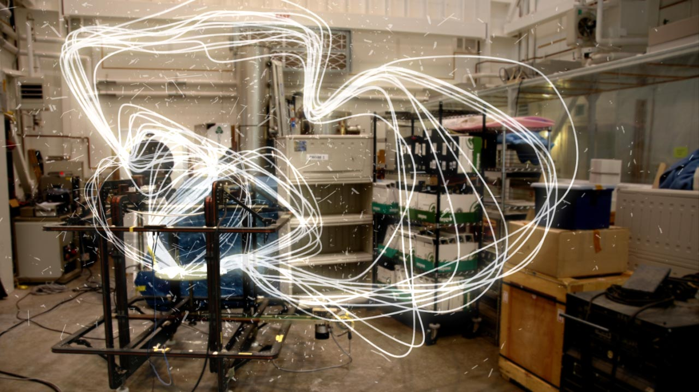
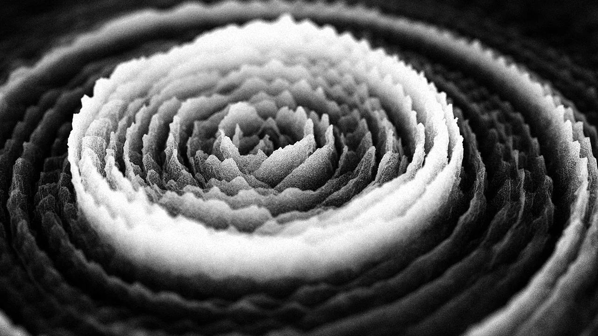
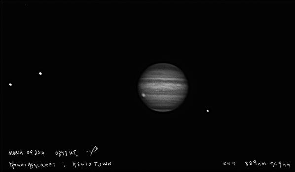
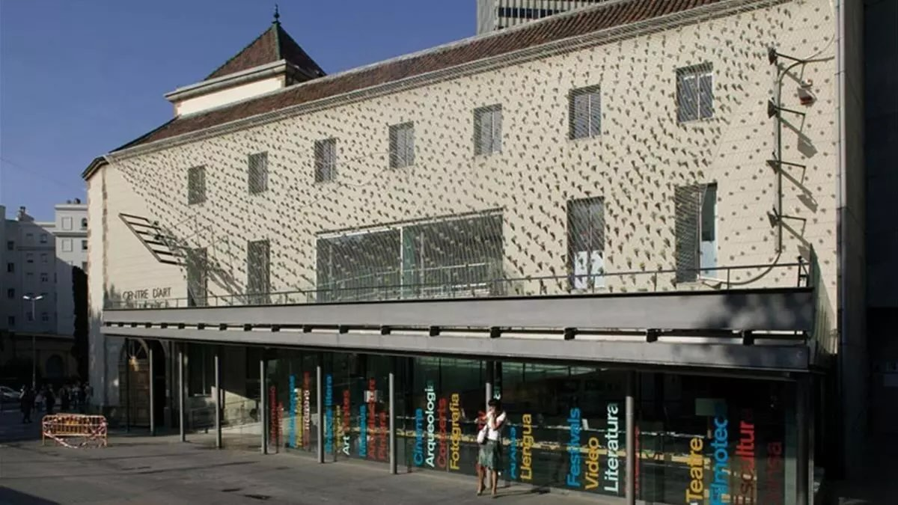
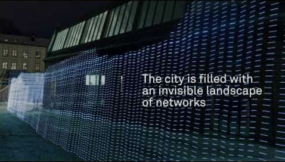

The air around us is saturated with invisible signals: radio broadcasts, mobile transmissions, GPS pulses, wireless data, satellite streams. Invisible Fields: Geographies of Radio Waves made this hidden electromagnetic landscape the subject of an exhibition, treating the radio spectrum not as infrastructure but as terrain — a geography that has reshaped how we perceive the cosmos, communicate across distances, and understand our own position in the world.
Co-curated with José Luis de Vicente at Arts Santa Mònica in Barcelona, the exhibition brought together artists working at the boundary between science and sensory experience. Semiconductor's Magnetic Movie rendered the invisible forces of solar wind as erupting, crackling matter; Rafael Lozano-Hemmer's Frequency and Volume invited visitors to tune the electromagnetic field of their own bodies; Trevor Paglen's work exposed the secret geographies of surveillance satellites drifting through the night sky; and Timo Arnall's Immaterials mapped the invisible architecture of WiFi. The show also incorporated operational workshops on antenna-building, community broadcasting, and satellite tracking, extending the exhibition into active, participatory knowledge.
The exhibition was accompanied by a publication drawing together artists, engineers, and theorists. The central question it posed — about the "Hertzian space" that electromagnetic waves have carved out of the modern world — remains urgent: we inhabit an environment shaped largely by forces we cannot see, and rarely think to examine.

Honor Harger · José Luis de Vicente
Timo Arnall · Thomas Ashcraft · Matthew Biederman · Anthony De Vincenzi · Diego Diaz & Clara Boj · Joyce Hinterding · Rafael Lozano-Hemmer · Trevor Paglen · Job Ramos · Semiconductor · Rasa Smite & Raitis Smits · Luthiers Drapaires
Arts Santa Mònica, Barcelona



